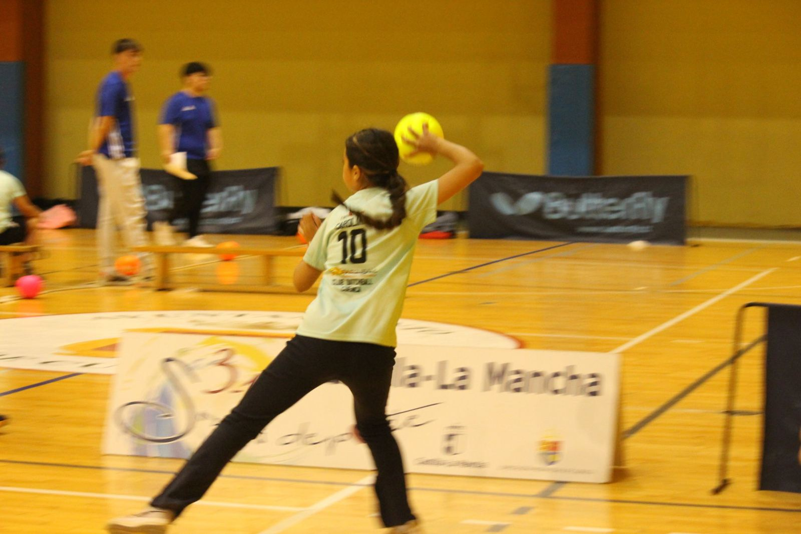
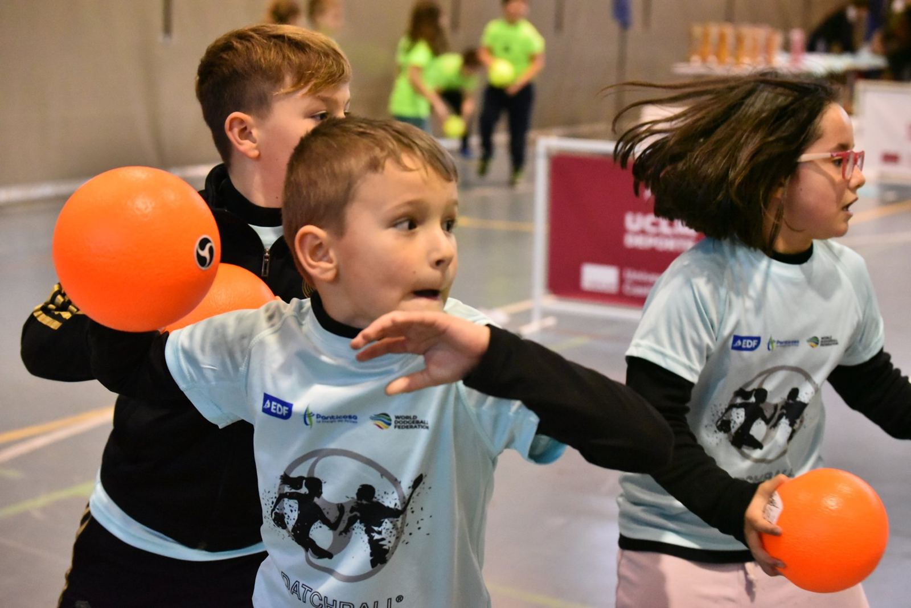
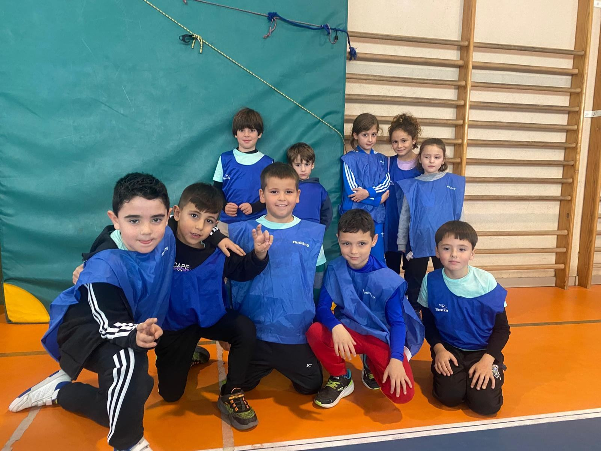

Un deporte nacido en la escuela
Mixto, educativo y con el respeto por delante. Esta es su historia.
Brea de Aragón, en un aula de 5.º
El datchball nace en el CEIP Diputación Provincial de Brea de Aragón (Zaragoza). Allí Roberto Navarro Arbués, maestro especialista de Educación Física, inventó con sus alumnos de quinto de Primaria las primeras reglas, que después se convertirían en el primer reglamento oficial.
Por nacer en un colegio, el juego pone por delante lo educativo: es un deporte nuevo, sin estereotipos previos, coeducativo porque exige equipos mixtos, y con reglas pensadas para que la superación, el esfuerzo y la diversión estén por encima del resultado.

De un colegio a todo el mundo

Nuestra historia
El datchball llegó a Cuenca en 2016 de la mano de Jaime Romero Gómez, maestro de Educación Física del CEIP Ciudad Encantada. Desde ese colegio, y sin ninguna estructura previa, lo impulsó a toda la ciudad.
Hoy la Liga Escolar de Datchball de Cuenca forma parte de Somos Deporte 3-18 desde 2021/22, da acceso a la Copa de Castilla-La Mancha y a la Copa de España, y es la liga más potente fuera de Aragón. Nuestros equipos ya son campeones de España.
Reglamento, normativa e inscripción
Descarga los documentos oficiales de la temporada 2026/27.
Reglamento oficial de datchball 2026/27
Asociación Española de Datchball · reglas de juego para todas las categorías.
Descargar →Normativa de la Liga Escolar de Datchball de Cuenca 2026/27
Categorías, sistema de competición, puntuación en valores, rotaciones y arbitraje.
Descargar →Hoja de inscripción de equipos · Liga 2026/27 (Anexo I)
PDF rellenable: una hoja por equipo (de 6 a 13 jugadores/as, equipo mixto). Envíala a ciudadencantadadeportiva@gmail.com.
Descargar →